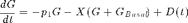
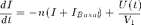
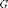
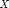
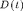
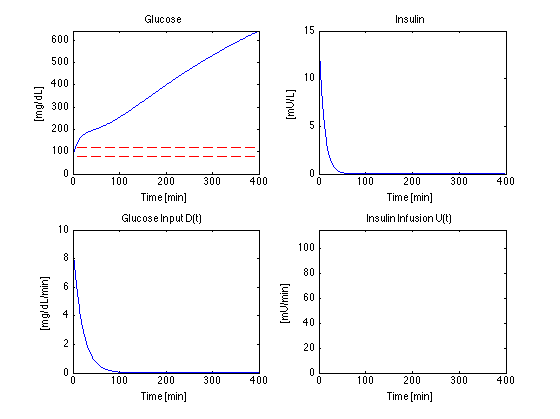
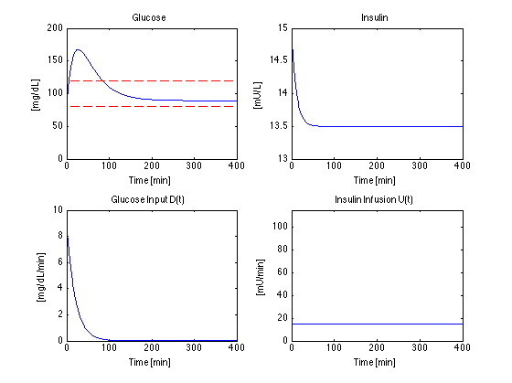
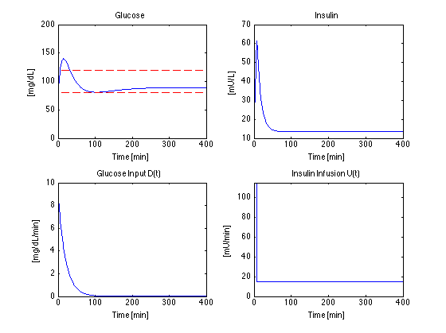

Example 23.03: Diabetes and the Artificial Pancreas
File: Ch23_E03_diabetes.m
Type 1 Diabetes (also called Juvenile Onset Diabetes) is a chronic disease in which the pancreas does not produce enough insulin to regulate glucose levels in the blood stream. The consequences are severe. Extremely glucose levels are immediately life threatening, while chronically high glucose levels causes long term organ damage. Conventional treatment requires patients to measure their blood glucose levels several times a day and inject insulin to maintain glucose levels within an acceptable band.
The development of continuous glucose monitors and insulin pumps has made it possible to provide closed-loop control of blood glucose levels. Such devices are currently in clinical trials. The purpose of these notes is to demonstrate of key features of this control problem.
Contents
Implementation Note
The simulations is implemented a Simulink models. This script uses the Matlab sim command to execute the Simulink models. Key parameters and functions in the models are set as Matlab workspace variables.
Insulin/Glucose Model
The following model is presented in the Seborg, Edgar, Mellichamp and Doyle textbook (Section 23.3.1).



Where  is the deviation of plasma glucose concentration from the basal level, is the deviation of plasma insulin concentration from the basal level, and  is the deviation of insulin concentration from basal level near the active site.  is the
Simulink Implementation
bdclose('all'); mdl = 'Ch23_E03_diabetes_mdl'; eval(mdl);

Initialization
This cell sets values for all of the key parameters used in the Simulink model. Execute this cell before attempting to run the model.
% Parameter Values p1 = 0.028735; % 1/min p2 = 0.028344; % 1/min p3 = 5.035e-5; % 1/min V = 12; % L n = 0.0926; % 1/min % Basal Glucose and Insulin concentrations. These are also the initial % conditions for the integrators. Gb = 81; % mg/dL; Ib = 15; % mU/L; % Disturbance [mg/dL/min] D = @(t) 9.0*exp(-0.05*t); % mg/dL/min
Simulating Glucose Levels with no Insulin
% Matlab command to run the simulink model
U = @(t) 0;
[t,xout,G,X,I,U] = sim(mdl);
Ch23_E03_diabetes_plot
 Simulating Glucose levels with Constant Insulin Infusion (U=15)
% Matlab command to run the simulink model
U = @(t) 15;
[t,xout,G,X,I,U] = sim(mdl);
Ch23_E03_diabetes_plot
 Simulating Glucose levels with Initial Insulin Bolus
% Matlab command to run the simulink model
U = @(t) 15 + 100*(t <= 8);
[t,xout,G,X,I,U] = sim(mdl);
Ch23_E03_diabetes_plot
